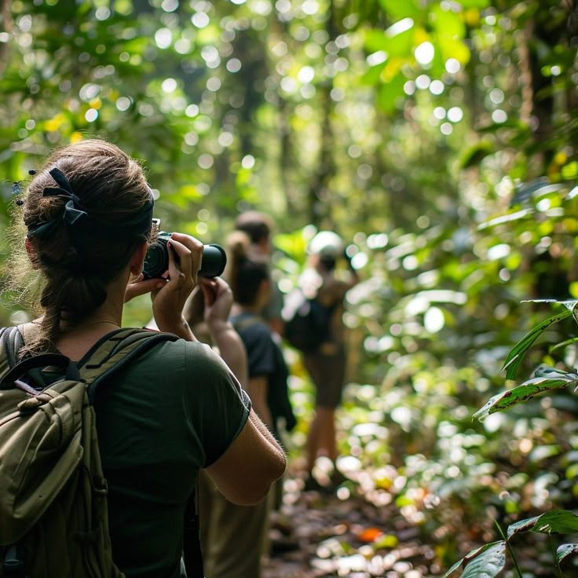

- 


Nossa história
minha Jornada como Cientista Ambiental
Desde criança, sempre fui fascinada pela natureza. Cresci explorando rios e florestas, observando a vida ao meu redor e tentando entender como tudo se conectava. Esse interesse me levou a estudar Ciências Ambientais, inspirada por cientistas como Rachel Carson, Vandana Shiva e James Lovelock.
Minha grande paixão é a Amazônia. Ao longo dos anos, estive diversas vezes na região, estudando os impactos do desmatamento e da contaminação dos rios. Trabalhei com comunidades locais para desenvolver projetos de reflorestamento e sistemas agroflorestais sustentáveis, unindo ciência e saberes tradicionais. Além disso, criei um sistema de biofiltragem natural para recuperar solos degradados, ajudando a restaurar áreas afetadas por atividades predatórias.
Além da pesquisa, me dedico à educação ambiental, pois acredito que a mudança começa com o conhecimento. Cada pequeno avanço reforça minha missão: proteger o planeta e inspirar outros a fazerem o mesmo.
projetos
Projetos de Conservação e Biodiversidade Monitoramento da fauna e flora – Estudo de espécies ameaçadas e impacto das mudanças climáticas. Restauração florestal – Projetos de reflorestamento com espécies nativas. Bioprospecção de plantas amazônicas – Pesquisa de compostos naturais para uso medicinal e cosmético. Conservação de polinizadores – Proteção de abelhas, morcegos e outros polinizadores essenciais.